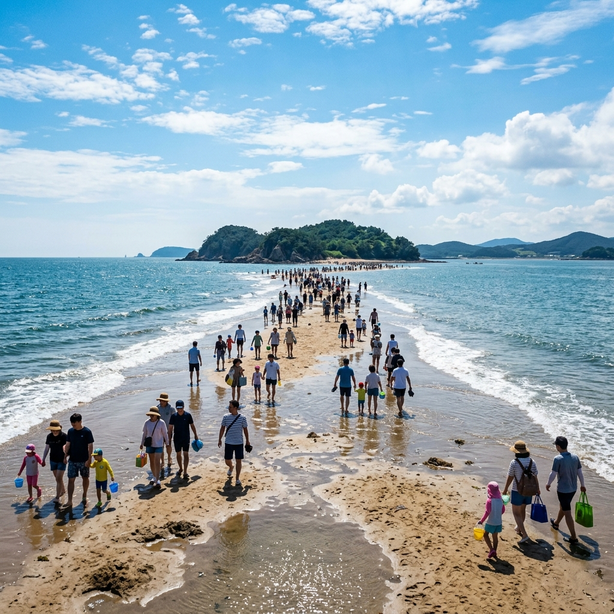
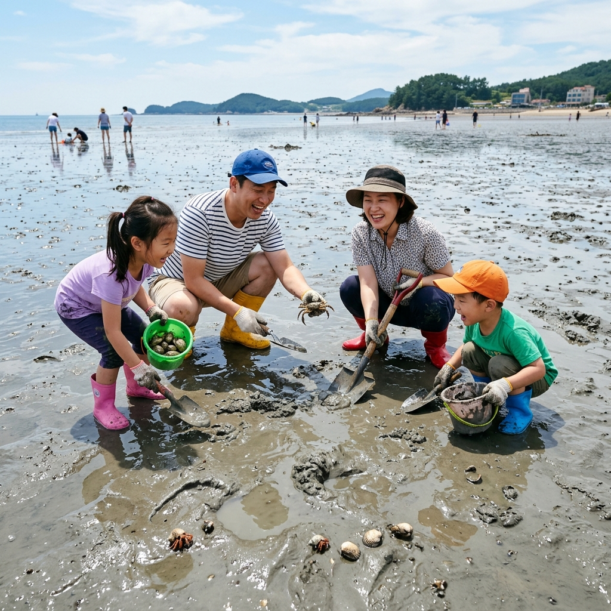
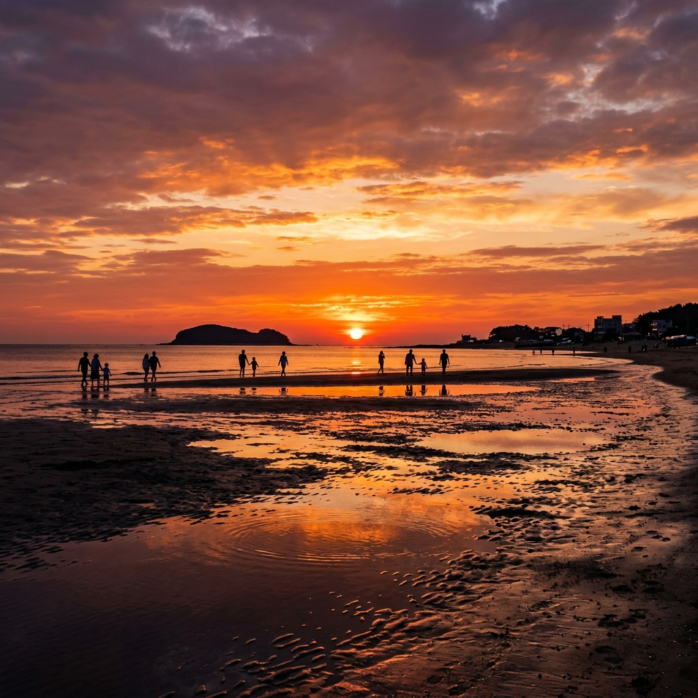

보령 무창포 신비의 바닷길 — 6월 가족 바다 갈라짐 체험과 석대도 걷기
충청남도 보령시 웅천읍 무창포해수욕장에서는 매달 물때에 따라 수십 차례 바닷길이 열리는 신비의 바닷길 현상을 경험할 수 있습니다.
국내에서 가장 긴 바닷길 중 하나인 이곳은 썰물 때 약 1.5km의 갯길이 드러나며, 걸어서 석대도(席垈島)에 닿을 수 있습니다. 6월은 바다가 아직 차갑지 않고 모래가 서서히 달궈지기 시작하는 시기로, 맨발 갯벌 체험과 조개 줍기, 가족 나들이에 최적의 조건을 제공합니다. 방문 전에는 반드시 보령시 공식 발표 물때 시간표를 확인해 안전하게 즐기세요.
01. 무창포 신비의 바닷길이란
무창포 신비의 바닷길은 충남 보령시 웅천읍 무창포해수욕장 앞에서 석대도 사이에 형성되는 조간대 갯길 현상입니다. 썰물 시간에 조위(潮位)가 충분히 낮아지면 평소에는 바닷물 아래 잠겨 있던 모래 능선이 수면 위로 드러나 걸어서 건널 수 있게 됩니다.
이 현상은 이스라엘 홍해를 가른 성경 속 장면에 빗대어 '한국의 모세의 기적'이라 불리기도 합니다. 물길이 열리는 현상은 달의 인력에 의한 조석 작용으로 나타나며, 매월 음력 보름과 그믐(음력 1일) 전후의 조차(潮差)가 큰 사리 물때에 가장 두드러집니다.
바닷길 폭은 최대 약 40~50m, 길이는 약 1.5km로 여유 있게 걸어서 석대도까지 편도 20~30분이 걸립니다. 길 양편으로는 작은 조개류와 고둥, 갯지렁이 등이 갯벌 속에 숨어 있어 아이들에게 자연 체험의 장이 됩니다.

무창포 바닷길이 열린 순간 / AI 제작 이미지
02. 2026년 물때 원리 — 언제 바닷길이 열리는가
바닷길이 열리는 날짜와 시간은 달의 위상과 조차에 따라 매달 달라집니다. 보령시는 매년 연간 물때 시간표를 공개하며, 2026년 물때 시간표도 이미 공식 발표되었습니다.
일반적으로 음력 1일(초하루)과 15일(보름) 전후 2~3일이 조차가 가장 크게 나타나는 '사리 물때'로, 이때 가장 길고 넓게 바닷길이 열립니다. 반면 음력 7~8일과 22~23일은 조차가 작은 '조금 물때'로 바닷길이 열리지 않거나 매우 짧게 열립니다.
정확한 방문 날짜를 계획하려면 반드시 보령시청 홈페이지(boryeong.go.kr) 또는 무창포관광안내소(041-936-3561)에서 6월 물때 시간표를 사전에 확인하시기 바랍니다. 바닷길이 열리는 시간은 오전이나 오후 특정 시간대에 국한되므로, 물때 시간에 맞춰 방문 일정을 역산하는 것이 중요합니다.
03. 6월 방문 타이밍과 안전 주의사항
6월의 무창포 바닷길은 수온이 아직 낮아 바닷물에 직접 발을 담그면 서늘함이 느껴집니다. 모래 갯벌 위로 걷는 맨발 체험은 상쾌한 자극이 됩니다. 장마가 시작되기 전인 6월 초~중순은 날씨가 맑고 파도가 잔잔한 날이 많아 바닷길 탐방에 이상적입니다.
안전 수칙은 반드시 지켜야 합니다. 바닷길은 물때가 지나면 다시 물이 차오르기 때문에, 안내소에서 고지하는 입장 마감 시간을 철저히 준수해야 합니다. 석대도까지 걸어갔다면 충분한 여유 시간을 두고 되돌아오세요. 물이 차오르는 속도는 예상보다 빠를 수 있습니다.
날씨 변화에 따라 바닷길이 예고 없이 단축되거나 취소될 수 있습니다. 강풍이 부는 날이나 파도가 높은 날은 현장 안내 요원의 통제에 따르고, 무리하게 입장하지 마시기 바랍니다. 어린이는 반드시 보호자와 함께 걷고, 손을 잡고 이동하는 것이 원칙입니다.
04. 석대도까지 바닷길 완전 탐방 가이드
바닷길이 열리면 무창포해수욕장 북쪽 갯벌 구간에서 출발하여 석대도까지 걸어갑니다. 처음에는 단단한 모래 위를 걷다가 중간 구간부터 좀 더 부드러운 갯벌 구간이 나오는데, 이 구간에서 조개류와 갯지렁이 구멍을 쉽게 발견할 수 있습니다.
석대도는 작은 무인도로, 섬에 올라 주변 서해 갯벌 경치를 둘러볼 수 있습니다. 섬에는 오르막 돌계단이 있어 정상(소나무 숲)에서 열린 바닷길과 보령 해안 풍경을 한눈에 조망할 수 있습니다. 다만 섬 안에는 화장실이 없으므로 출발 전 미리 해결하고 이동하세요.
갯벌 체험을 원하는 경우, 바닷길 가장자리 갯벌 구간에서 조개나 게를 찾아볼 수 있습니다. 작은 양동이와 장갑·삽을 준비하면 더욱 즐거운 체험이 됩니다. 채취한 생물은 다시 방류하는 것이 생태계 보호 측면에서 바람직합니다.

무창포 갯벌 조개 체험 / AI 제작 이미지
05. 무창포해수욕장 시설 및 편의 안내
무창포해수욕장은 충남 서해안의 중규모 해수욕장으로, 백사장 길이는 약 1km입니다. 해수욕 시즌인 7월~8월에 비해 6월은 해수욕장이 아직 완전 개장 전이라 조용하게 갯벌 체험에 집중할 수 있습니다.
해수욕장 주변에는 민박·펜션·식당·편의점이 갖춰져 있으며, 족구장·배구장 등 부대 시설도 있습니다. 샤워 시설은 하계 개장 기간에 운영되므로 6월 방문 시 갯벌 체험 후 세족 공간만 이용 가능한 경우가 많습니다. 개인 수건과 여벌 양말을 준비하면 편리합니다.
해수욕장 앞 도로변에는 해산물을 파는 포장마차와 횟집들이 있습니다. 제철 꽃게·홍어·키조개 등 서해 싱싱한 해산물을 저렴하게 맛볼 수 있어 식도락 여행으로도 훌륭합니다.
06. 교통·주차 안내
무창포해수욕장은 서울에서 서해안고속도로를 이용하면 약 2시간 30분 거리입니다. 광천 IC 또는 대천 IC에서 하차 후 국도를 이용해 웅천읍 방면으로 이동합니다. 내비게이션에 '무창포해수욕장'을 검색하면 됩니다.
대중교통으로는 수도권에서 장항선 열차를 이용해 홍성역 또는 보령역(청소역)에 내린 뒤, 보령 시내버스 또는 택시로 무창포까지 이동할 수 있습니다. 보령 시외버스터미널에서 무창포행 시내버스도 운행합니다.
해수욕장 인근 무료 공용주차장이 넓게 조성되어 있습니다. 7~8월 성수기와 달리 6월에는 주차 걱정 없이 편하게 방문할 수 있습니다.
07. 대천해수욕장·죽도 연계 코스
무창포에서 차로 20분 거리에 있는 대천해수욕장은 충남 최대 규모의 서해 해수욕장으로 편의 시설이 풍부합니다. 무창포에서 갯벌 체험을 마친 뒤 대천으로 이동해 저녁 식사와 숙박을 해결하는 코스가 인기입니다.
대천항에서 배를 타면 외연도·삽시도·원산도·녹도 등 다양한 서해 섬으로 이동할 수 있습니다. 원산도와 안면도는 비교적 규모가 크고 편의 시설이 있어 1박 2일 섬 여행으로도 좋습니다.
대천해수욕장 인근 죽도는 밀물 때는 섬, 썰물 때는 육지와 연결되는 소규모 섬으로 산책하기 좋습니다. 죽도 정상의 전망대에서 내려다보이는 대천 앞바다 풍경이 시원합니다.
08. 숙박 — 무창포·웅천 펜션 선택 팁
무창포 일대에는 바다 전망 펜션들이 여럿 있습니다. 6월은 성수기가 아니므로 7~8월보다 저렴한 가격에 예약할 수 있습니다. 해수욕장 코앞에 있는 펜션은 바닷길이 열리는 시간에 맞춰 조용히 기다리다 바로 나갈 수 있어 편리합니다.
보령시 웅천읍 일대는 대단지 펜션촌이 형성되어 있어 가족·커플·단체 등 다양한 규모의 숙박 시설을 선택할 수 있습니다. 예약 시 바닷길이 열리는 날짜(물때)에 맞춰 체크인 날을 조정하면 더욱 알찬 여행이 됩니다.
웅천읍 또는 보령 시내 숙박을 이용하면 더 저렴하게 묵을 수 있으며, 이 경우 무창포해수욕장까지 차로 10~15분이면 이동 가능합니다.

무창포 서해 낙조 풍경 / AI 제작 이미지
#무창포신비의바닷길
#보령바닷길
#무창포해수욕장
#석대도
#갯벌체험
#보령여행
#충남여행
#6월가족여행
#서해여행
#국내여행